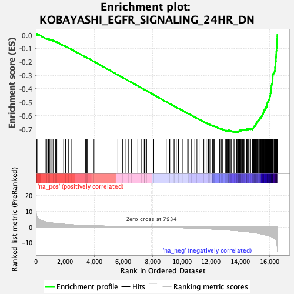

| | | Dataset | DE_genes2 |
| Phenotype | NoPhenotypeAvailable |
| Upregulated in class | na_neg |
| GeneSet | KOBAYASHI_EGFR_SIGNALING_24HR_DN |
| Enrichment Score (ES) | -0.72651374 |
| Normalized Enrichment Score (NES) | -2.4721954 |
| Nominal p-value | 0.0 |
| FDR q-value | 0.0 |
| FWER p-Value | 0.0 |
Table: GSEA Results Summary

Fig 1: Enrichment plot: KOBAYASHI_EGFR_SIGNALING_24HR_DN
Profile of the Running ES Score & Positions of GeneSet Members on the Rank Ordered List
| PROBE | GENE SYMBOL | GENE_TITLE | RANK IN GENE LIST | RANK METRIC SCORE | RUNNING ES | CORE ENRICHMENT | | 1 | CDC42EP1 | | | 69 | 6.820 | 0.0027 | No |
| 2 | TFPI2 | | | 75 | 6.662 | 0.0091 | No |
| 3 | TUBB2A | | | 689 | 3.220 | -0.0253 | No |
| 4 | TUBB6 | | | 756 | 3.109 | -0.0262 | No |
| 5 | TUBA1A | | | 866 | 2.911 | -0.0299 | No |
| 6 | SOX9 | | | 959 | 2.783 | -0.0327 | No |
| 7 | OASL | | | 1040 | 2.688 | -0.0349 | No |
| 8 | IL11 | | | 1177 | 2.497 | -0.0407 | No |
| 9 | SPHK1 | | | 1353 | 2.315 | -0.0491 | No |
| 10 | TNFRSF12A | | | 1433 | 2.237 | -0.0517 | No |
| 11 | RANGAP1 | | | 1901 | 1.838 | -0.0785 | No |
| 12 | PHLDA2 | | | 2032 | 1.732 | -0.0848 | No |
| 13 | CX3CL1 | | | 2246 | 1.590 | -0.0962 | No |
| 14 | MAFF | | | 2457 | 1.463 | -0.1076 | No |
| 15 | TGFA | | | 3407 | 1.036 | -0.1649 | No |
| 16 | UPP1 | | | 3479 | 1.012 | -0.1682 | No |
| 17 | CCND1 | | | 3532 | 0.996 | -0.1704 | No |
| 18 | TCN1 | | | 3980 | 0.842 | -0.1970 | No |
| 19 | TUBB | | | 5614 | 0.424 | -0.2968 | No |
| 20 | TUBB4B | | | 5933 | 0.359 | -0.3160 | No |
| 21 | IER3 | | | 6115 | 0.322 | -0.3268 | No |
| 22 | FABP5 | | | 6357 | 0.273 | -0.3413 | No |
| 23 | SLCO4A1 | | | 6521 | 0.240 | -0.3511 | No |
| 24 | DUSP6 | | | 6555 | 0.233 | -0.3529 | No |
| 25 | GJB3 | | | 6982 | 0.158 | -0.3789 | No |
| 26 | ACOX2 | | | 7246 | 0.107 | -0.3949 | No |
| 27 | CKLF | | | 7422 | 0.078 | -0.4056 | No |
| 28 | SLC43A3 | | | 7433 | 0.076 | -0.4061 | No |
| 29 | G0S2 | | | 7544 | 0.057 | -0.4128 | No |
| 30 | CARD10 | | | 7586 | 0.051 | -0.4153 | No |
| 31 | TUBG1 | | | 7955 | -0.003 | -0.4379 | No |
| 32 | ENO2 | | | 8075 | -0.022 | -0.4451 | No |
| 33 | CCND3 | | | 8929 | -0.178 | -0.4973 | No |
| 34 | SLC29A1 | | | 9162 | -0.229 | -0.5114 | No |
| 35 | DUSP5 | | | 9232 | -0.250 | -0.5153 | No |
| 36 | STC1 | | | 9424 | -0.296 | -0.5268 | No |
| 37 | FAM86C1 | | | 9497 | -0.313 | -0.5309 | No |
| 38 | POLA2 | | | 9615 | -0.343 | -0.5377 | No |
| 39 | ELL2 | | | 9768 | -0.392 | -0.5466 | No |
| 40 | ZC3HAV1 | | | 9789 | -0.397 | -0.5475 | No |
| 41 | GINS3 | | | 9801 | -0.401 | -0.5477 | No |
| 42 | GALNT10 | | | 10028 | -0.468 | -0.5611 | No |
| 43 | UNG | | | 10394 | -0.586 | -0.5830 | No |
| 44 | PPIF | | | 10468 | -0.609 | -0.5868 | No |
| 45 | ADORA2B | | | 10664 | -0.682 | -0.5981 | No |
| 46 | CDK2 | | | 10886 | -0.760 | -0.6109 | No |
| 47 | TREX2 | | | 11030 | -0.814 | -0.6189 | No |
| 48 | CDCA4 | | | 11178 | -0.873 | -0.6270 | No |
| 49 | SRM | | | 11503 | -1.004 | -0.6459 | No |
| 50 | AREG | | | 11666 | -1.074 | -0.6548 | No |
| 51 | STEAP1 | | | 11776 | -1.118 | -0.6603 | No |
| 52 | POLR2D | | | 11819 | -1.141 | -0.6617 | No |
| 53 | NT5E | | | 11919 | -1.185 | -0.6666 | No |
| 54 | ITGA6 | | | 12086 | -1.267 | -0.6755 | No |
| 55 | PA2G4 | | | 12113 | -1.278 | -0.6758 | No |
| 56 | POLR3K | | | 12148 | -1.305 | -0.6766 | No |
| 57 | DUSP4 | | | 12195 | -1.323 | -0.6781 | No |
| 58 | STIL | | | 12207 | -1.330 | -0.6774 | No |
| 59 | DCBLD2 | | | 12246 | -1.348 | -0.6784 | No |
| 60 | RFWD3 | | | 12547 | -1.504 | -0.6953 | No |
| 61 | RFC2 | | | 12578 | -1.523 | -0.6956 | No |
| 62 | CMC2 | | | 12600 | -1.532 | -0.6953 | No |
| 63 | E2F8 | | | 12689 | -1.584 | -0.6991 | No |
| 64 | PRPS1 | | | 12730 | -1.603 | -0.6999 | No |
| 65 | HMGA2 | | | 12776 | -1.631 | -0.7010 | No |
| 66 | TCOF1 | | | 12962 | -1.747 | -0.7106 | No |
| 67 | UCK2 | | | 13004 | -1.774 | -0.7114 | No |
| 68 | RRM1 | | | 13038 | -1.791 | -0.7116 | No |
| 69 | MET | | | 13065 | -1.808 | -0.7113 | No |
| 70 | HSPA14 | | | 13105 | -1.827 | -0.7119 | No |
| 71 | CENPM | | | 13147 | -1.858 | -0.7125 | No |
| 72 | AXL | | | 13159 | -1.867 | -0.7113 | No |
| 73 | CTPS1 | | | 13171 | -1.873 | -0.7101 | No |
| 74 | RNASEH2A | | | 13180 | -1.879 | -0.7087 | No |
| 75 | FAM216A | | | 13182 | -1.880 | -0.7068 | No |
| 76 | UBE2S | | | 13279 | -1.941 | -0.7107 | No |
| 77 | SPRED2 | | | 13335 | -1.978 | -0.7121 | No |
| 78 | CDT1 | | | 13400 | -2.026 | -0.7140 | No |
| 79 | TMEM158 | | | 13517 | -2.105 | -0.7190 | No |
| 80 | TIMELESS | | | 13518 | -2.107 | -0.7168 | No |
| 81 | DDX39A | | | 13577 | -2.146 | -0.7182 | No |
| 82 | RANBP1 | | | 13713 | -2.252 | -0.7242 | Yes |
| 83 | WWTR1 | | | 13721 | -2.257 | -0.7224 | Yes |
| 84 | ETV5 | | | 13745 | -2.275 | -0.7215 | Yes |
| 85 | NME1 | | | 13763 | -2.298 | -0.7202 | Yes |
| 86 | MCM3 | | | 13783 | -2.315 | -0.7190 | Yes |
| 87 | MCM5 | | | 13861 | -2.378 | -0.7213 | Yes |
| 88 | NOP56 | | | 13863 | -2.380 | -0.7190 | Yes |
| 89 | CKS1B | | | 13865 | -2.382 | -0.7166 | Yes |
| 90 | DSN1 | | | 13907 | -2.424 | -0.7167 | Yes |
| 91 | FEN1 | | | 13911 | -2.426 | -0.7144 | Yes |
| 92 | MCM7 | | | 13952 | -2.457 | -0.7144 | Yes |
| 93 | RFC5 | | | 13956 | -2.460 | -0.7121 | Yes |
| 94 | DHFR | | | 13968 | -2.471 | -0.7102 | Yes |
| 95 | SNRPA1 | | | 14016 | -2.506 | -0.7106 | Yes |
| 96 | ASF1B | | | 14048 | -2.550 | -0.7099 | Yes |
| 97 | NEK2 | | | 14051 | -2.552 | -0.7074 | Yes |
| 98 | CCNF | | | 14092 | -2.590 | -0.7073 | Yes |
| 99 | NCAPD3 | | | 14122 | -2.615 | -0.7064 | Yes |
| 100 | NOLC1 | | | 14136 | -2.629 | -0.7045 | Yes |
| 101 | TYMS | | | 14161 | -2.652 | -0.7033 | Yes |
| 102 | PARP2 | | | 14232 | -2.727 | -0.7049 | Yes |
| 103 | ESPL1 | | | 14262 | -2.749 | -0.7039 | Yes |
| 104 | KPNA2 | | | 14317 | -2.796 | -0.7043 | Yes |
| 105 | SRSF7 | | | 14411 | -2.888 | -0.7071 | Yes |
| 106 | FOSL1 | | | 14422 | -2.905 | -0.7048 | Yes |
| 107 | PSMC3IP | | | 14430 | -2.915 | -0.7023 | Yes |
| 108 | DUT | | | 14433 | -2.919 | -0.6994 | Yes |
| 109 | SNRPD1 | | | 14482 | -2.970 | -0.6994 | Yes |
| 110 | CENPU | | | 14542 | -3.039 | -0.6999 | Yes |
| 111 | CHAF1A | | | 14579 | -3.085 | -0.6990 | Yes |
| 112 | NUDT15 | | | 14608 | -3.122 | -0.6976 | Yes |
| 113 | SLC20A1 | | | 14690 | -3.232 | -0.6993 | Yes |
| 114 | MYBL1 | | | 14708 | -3.250 | -0.6970 | Yes |
| 115 | NAP1L1 | | | 14844 | -3.416 | -0.7018 | Yes |
| 116 | DNAJC9 | | | 14857 | -3.434 | -0.6991 | Yes |
| 117 | MSH6 | | | 14863 | -3.443 | -0.6959 | Yes |
| 118 | LMNB2 | | | 14879 | -3.473 | -0.6933 | Yes |
| 119 | PCNA | | | 14896 | -3.501 | -0.6907 | Yes |
| 120 | MCM4 | | | 14906 | -3.510 | -0.6877 | Yes |
| 121 | CDCA3 | | | 14921 | -3.539 | -0.6850 | Yes |
| 122 | CSE1L | | | 14944 | -3.568 | -0.6827 | Yes |
| 123 | RACGAP1 | | | 14957 | -3.580 | -0.6799 | Yes |
| 124 | MSH2 | | | 14972 | -3.606 | -0.6771 | Yes |
| 125 | MCM2 | | | 15006 | -3.658 | -0.6754 | Yes |
| 126 | PLK4 | | | 15029 | -3.687 | -0.6730 | Yes |
| 127 | GMNN | | | 15032 | -3.688 | -0.6694 | Yes |
| 128 | E2F1 | | | 15036 | -3.695 | -0.6658 | Yes |
| 129 | CDC25A | | | 15082 | -3.764 | -0.6648 | Yes |
| 130 | CKS2 | | | 15086 | -3.767 | -0.6611 | Yes |
| 131 | CENPN | | | 15099 | -3.785 | -0.6580 | Yes |
| 132 | DONSON | | | 15105 | -3.791 | -0.6545 | Yes |
| 133 | ZWINT | | | 15107 | -3.798 | -0.6507 | Yes |
| 134 | ETV1 | | | 15152 | -3.846 | -0.6495 | Yes |
| 135 | TFDP1 | | | 15156 | -3.856 | -0.6458 | Yes |
| 136 | TEX30 | | | 15194 | -3.913 | -0.6441 | Yes |
| 137 | RAD54B | | | 15206 | -3.922 | -0.6408 | Yes |
| 138 | POLA1 | | | 15213 | -3.936 | -0.6372 | Yes |
| 139 | CDCA8 | | | 15225 | -3.955 | -0.6338 | Yes |
| 140 | FAM111A | | | 15280 | -4.085 | -0.6330 | Yes |
| 141 | RAD51 | | | 15283 | -4.088 | -0.6290 | Yes |
| 142 | SPAG5 | | | 15339 | -4.181 | -0.6281 | Yes |
| 143 | TK1 | | | 15344 | -4.187 | -0.6241 | Yes |
| 144 | EZH2 | | | 15352 | -4.214 | -0.6203 | Yes |
| 145 | BARD1 | | | 15360 | -4.219 | -0.6165 | Yes |
| 146 | CDC20 | | | 15404 | -4.309 | -0.6147 | Yes |
| 147 | POLE2 | | | 15406 | -4.310 | -0.6104 | Yes |
| 148 | EXOSC8 | | | 15447 | -4.383 | -0.6084 | Yes |
| 149 | PSAT1 | | | 15468 | -4.426 | -0.6052 | Yes |
| 150 | VRK1 | | | 15477 | -4.445 | -0.6012 | Yes |
| 151 | MYBL2 | | | 15492 | -4.462 | -0.5975 | Yes |
| 152 | NETO2 | | | 15507 | -4.497 | -0.5938 | Yes |
| 153 | TRIP13 | | | 15527 | -4.544 | -0.5904 | Yes |
| 154 | NRG1 | | | 15534 | -4.562 | -0.5861 | Yes |
| 155 | GINS1 | | | 15564 | -4.619 | -0.5832 | Yes |
| 156 | ZWILCH | | | 15582 | -4.659 | -0.5795 | Yes |
| 157 | FANCI | | | 15588 | -4.678 | -0.5751 | Yes |
| 158 | NEMP1 | | | 15605 | -4.735 | -0.5713 | Yes |
| 159 | AURKA | | | 15607 | -4.737 | -0.5665 | Yes |
| 160 | PLK1 | | | 15623 | -4.763 | -0.5626 | Yes |
| 161 | CCNB1 | | | 15643 | -4.796 | -0.5589 | Yes |
| 162 | NOC3L | | | 15676 | -4.864 | -0.5560 | Yes |
| 163 | RRM2 | | | 15702 | -4.911 | -0.5525 | Yes |
| 164 | UBE2C | | | 15704 | -4.913 | -0.5476 | Yes |
| 165 | BLM | | | 15728 | -4.957 | -0.5440 | Yes |
| 166 | BIRC5 | | | 15741 | -4.998 | -0.5397 | Yes |
| 167 | ORC1 | | | 15778 | -5.075 | -0.5367 | Yes |
| 168 | RFC4 | | | 15807 | -5.149 | -0.5332 | Yes |
| 169 | CDK1 | | | 15810 | -5.156 | -0.5281 | Yes |
| 170 | MCM6 | | | 15829 | -5.218 | -0.5240 | Yes |
| 171 | PUS7 | | | 15836 | -5.238 | -0.5190 | Yes |
| 172 | NCAPH | | | 15843 | -5.247 | -0.5141 | Yes |
| 173 | PRIM1 | | | 15856 | -5.276 | -0.5095 | Yes |
| 174 | TPX2 | | | 15859 | -5.288 | -0.5042 | Yes |
| 175 | DKK1 | | | 15876 | -5.321 | -0.4998 | Yes |
| 176 | ORC6 | | | 15923 | -5.453 | -0.4971 | Yes |
| 177 | ABCE1 | | | 15929 | -5.459 | -0.4919 | Yes |
| 178 | HELLS | | | 15936 | -5.474 | -0.4867 | Yes |
| 179 | PAICS | | | 15966 | -5.553 | -0.4829 | Yes |
| 180 | RRP15 | | | 15975 | -5.575 | -0.4777 | Yes |
| 181 | DBF4 | | | 16002 | -5.664 | -0.4736 | Yes |
| 182 | PSRC1 | | | 16011 | -5.700 | -0.4683 | Yes |
| 183 | RFC3 | | | 16020 | -5.728 | -0.4630 | Yes |
| 184 | GTSE1 | | | 16026 | -5.744 | -0.4574 | Yes |
| 185 | MAD2L1 | | | 16043 | -5.805 | -0.4525 | Yes |
| 186 | KIF2C | | | 16061 | -5.848 | -0.4477 | Yes |
| 187 | ATAD2 | | | 16065 | -5.853 | -0.4419 | Yes |
| 188 | TMPO | | | 16067 | -5.864 | -0.4360 | Yes |
| 189 | ECT2 | | | 16082 | -5.906 | -0.4309 | Yes |
| 190 | KIF18B | | | 16087 | -5.923 | -0.4251 | Yes |
| 191 | HAT1 | | | 16101 | -5.959 | -0.4199 | Yes |
| 192 | PRC1 | | | 16103 | -5.960 | -0.4139 | Yes |
| 193 | CCNE2 | | | 16115 | -5.986 | -0.4085 | Yes |
| 194 | AURKB | | | 16120 | -6.007 | -0.4027 | Yes |
| 195 | MELK | | | 16129 | -6.045 | -0.3971 | Yes |
| 196 | SPC25 | | | 16131 | -6.050 | -0.3910 | Yes |
| 197 | TIPIN | | | 16138 | -6.072 | -0.3852 | Yes |
| 198 | HNRNPDL | | | 16141 | -6.082 | -0.3792 | Yes |
| 199 | BUB1 | | | 16142 | -6.084 | -0.3730 | Yes |
| 200 | ERCC6L | | | 16159 | -6.148 | -0.3677 | Yes |
| 201 | LMNB1 | | | 16178 | -6.259 | -0.3625 | Yes |
| 202 | NCAPG2 | | | 16188 | -6.289 | -0.3567 | Yes |
| 203 | GPSM2 | | | 16202 | -6.325 | -0.3511 | Yes |
| 204 | HJURP | | | 16210 | -6.380 | -0.3450 | Yes |
| 205 | ODC1 | | | 16212 | -6.391 | -0.3386 | Yes |
| 206 | GINS2 | | | 16213 | -6.392 | -0.3321 | Yes |
| 207 | RAD51AP1 | | | 16221 | -6.439 | -0.3261 | Yes |
| 208 | EREG | | | 16225 | -6.454 | -0.3197 | Yes |
| 209 | KIF4A | | | 16226 | -6.459 | -0.3131 | Yes |
| 210 | DTL | | | 16230 | -6.481 | -0.3068 | Yes |
| 211 | SPDL1 | | | 16232 | -6.486 | -0.3003 | Yes |
| 212 | EEF1E1 | | | 16236 | -6.496 | -0.2939 | Yes |
| 213 | PKMYT1 | | | 16257 | -6.586 | -0.2884 | Yes |
| 214 | CDC45 | | | 16272 | -6.693 | -0.2825 | Yes |
| 215 | BUB1B | | | 16335 | -7.102 | -0.2791 | Yes |
| 216 | KIF23 | | | 16347 | -7.203 | -0.2725 | Yes |
| 217 | DSCC1 | | | 16359 | -7.253 | -0.2658 | Yes |
| 218 | NUSAP1 | | | 16374 | -7.420 | -0.2591 | Yes |
| 219 | CDC6 | | | 16375 | -7.439 | -0.2516 | Yes |
| 220 | CCNA2 | | | 16376 | -7.439 | -0.2441 | Yes |
| 221 | EXO1 | | | 16387 | -7.570 | -0.2370 | Yes |
| 222 | RMI1 | | | 16408 | -7.835 | -0.2303 | Yes |
| 223 | KIF11 | | | 16409 | -7.860 | -0.2223 | Yes |
| 224 | BRCA1 | | | 16413 | -7.892 | -0.2145 | Yes |
| 225 | SMC4 | | | 16421 | -7.981 | -0.2068 | Yes |
| 226 | USP1 | | | 16424 | -8.003 | -0.1989 | Yes |
| 227 | CENPA | | | 16438 | -8.139 | -0.1914 | Yes |
| 228 | SHCBP1 | | | 16441 | -8.157 | -0.1833 | Yes |
| 229 | NAA15 | | | 16442 | -8.159 | -0.1750 | Yes |
| 230 | TTK | | | 16444 | -8.189 | -0.1668 | Yes |
| 231 | KIF15 | | | 16449 | -8.254 | -0.1586 | Yes |
| 232 | PBK | | | 16458 | -8.487 | -0.1505 | Yes |
| 233 | PNN | | | 16460 | -8.504 | -0.1420 | Yes |
| 234 | CDKN3 | | | 16463 | -8.532 | -0.1334 | Yes |
| 235 | SMC2 | | | 16464 | -8.568 | -0.1248 | Yes |
| 236 | MCM10 | | | 16471 | -8.676 | -0.1163 | Yes |
| 237 | DLGAP5 | | | 16482 | -9.145 | -0.1077 | Yes |
| 238 | MKI67 | | | 16483 | -9.193 | -0.0984 | Yes |
| 239 | TOP2A | | | 16497 | -9.873 | -0.0892 | Yes |
| 240 | KIF14 | | | 16503 | -10.060 | -0.0793 | Yes |
| 241 | NCAPG | | | 16504 | -10.079 | -0.0691 | Yes |
| 242 | CEP55 | | | 16508 | -10.710 | -0.0584 | Yes |
| 243 | ASPM | | | 16510 | -10.824 | -0.0475 | Yes |
| 244 | DEPDC1 | | | 16522 | -11.603 | -0.0364 | Yes |
| 245 | HMGB2 | | | 16525 | -11.801 | -0.0246 | Yes |
| 246 | NDC80 | | | 16527 | -12.233 | -0.0122 | Yes |
| 247 | HMMR | | | 16528 | -12.240 | 0.0002 | Yes |
Table: GSEA details [plain text format]
Fig 2: KOBAYASHI_EGFR_SIGNALING_24HR_DN: Random ES distribution
Gene set null distribution of ES for KOBAYASHI_EGFR_SIGNALING_24HR_DN